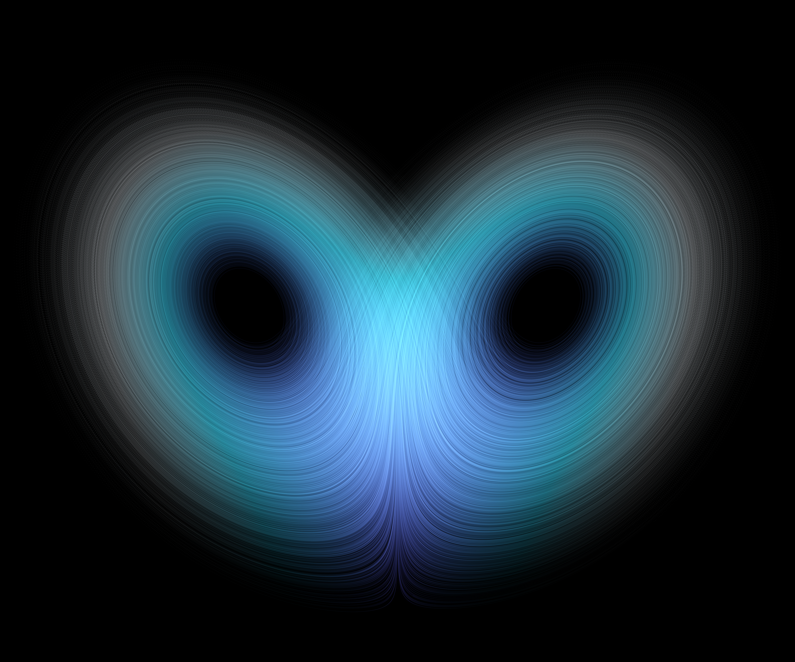

C−(−√(β(ρ−1)), −√(β(ρ−1)), ρ−1)
C+(√(β(ρ−1)), √(β(ρ−1)), ρ−1)
Axiom
公理是推演的起点。
An axiom is where deduction begins.
EQUATIONS
dx/dt = σ(y − x)
dy/dt = x(ρ − z) − y
dz/dt = xy − βz
画面是 520 条轨道的长曝光。此参数下轨道落在混沌吸引子上，初值的微小差别按指数放大。
AXIOMS
- 1数学就在日常里Mathematics lives in everyday life
- 2先弄清问题，再动手算Understand before you calculate
- 3对数学好奇，就够了Curiosity is enough
- 4有趣和有用，可以兼得Fun and useful can go together
OUR OBSERVATION
- 01地铁成绩单The Metro Report Card
- 02用 AI 筛选抗 HBsAg 抗体Screening antibodies with AI
- 03非理想弦的谱辨识Spectral identification of strings
- 04气候能源转型模拟器Climate energy transition simulator
45名成员
IMMCFinalist 奖
23 周数学建模训练营
周三中午Incubator 公开活动
1:00–1:30系统学习
招新与报名方式，请留意校内通知。 Watch school announcements for how to join.
∎